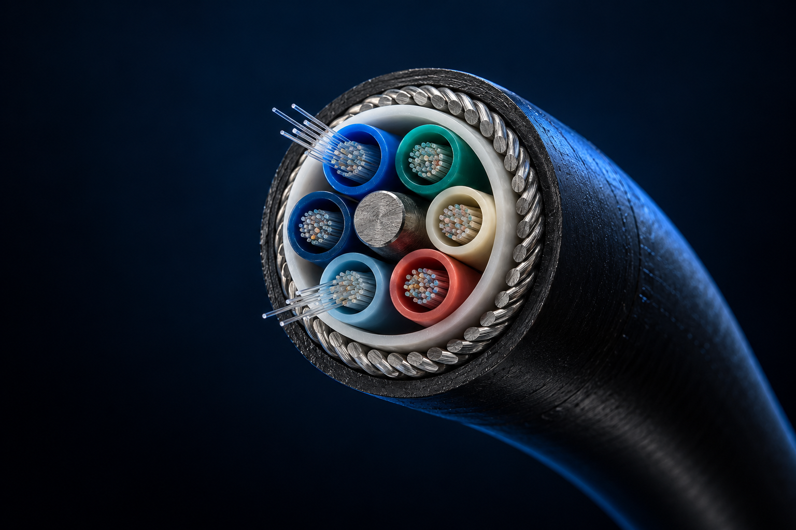

Разбираем задачу
Изучаем адреса, техническое задание и условия на объекте.
Строим и обслуживаем волоконно-оптические линии связи в Москве и области.

Выберите направление работ на разрезе или в списке нижеОбследуем трассу, собираем исходные данные и готовим проектную документацию.
Подключаемся на отдельном этапе или ведём строительство целиком. Состав работ и результат фиксируем до начала проекта.
Обследование трассы и проектная документация
↗02Прокладка линий и организация инфраструктуры
↗03Подготовка трассы и кабельная канализация
↗04Переходы через дороги и другие препятствия
↗05Муфты, кроссы, сварка оптического волокна
↗06Защита кабельных линий и проходок
↗07Плановые работы и восстановление линий
↗08Проекты с операторами и владельцами инфраструктуры
↗У каждого этапа есть исходные данные, ответственный и результат для заказчика.
Изучаем адреса, техническое задание и условия на объекте.
Определяем трассу, объём работ, смету и порядок выполнения.
Выполняем работы и измеряем параметры готовой линии.
Готовим исполнительную документацию и условия обслуживания.
Связь Коннект входит в группу компаний ЮЛ-ком. Работаем с физической инфраструктурой связи: от трассы и кабельной канализации до оптических соединений.
Познакомиться с компанией ↗Проект определяет технология, существующая инфраструктура и условия на площадке.
Прокладка кабеля, строительство переходов и кабельной канализации.
Объекты и направления ↗Монтаж, измерения, обслуживание и восстановительные работы.
Обслуживание ВОЛС ↗Пришлите исходные данные. Уточним задачу и подготовим предложение.
+7 495 748-13-49 ↗